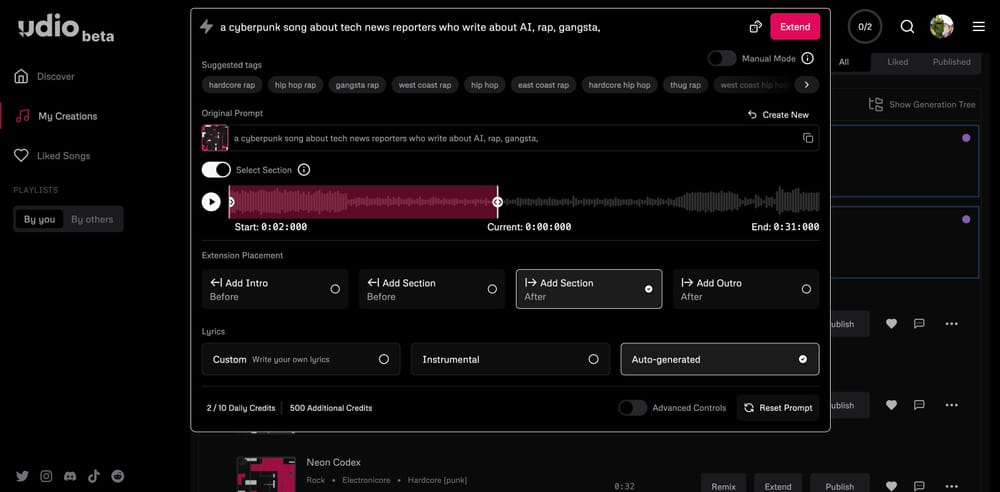

Try It Now
Overview
Udio is a professional-grade AI music generation platform that emerged in 2026 as a powerful competitor in the AI music space. Created by former Google DeepMind researchers, Udio focuses on delivering exceptional audio fidelity and professional features that appeal to serious musicians, producers, and content creators. While similar to Suno AI in many ways, Udio distinguishes itself through superior audio quality and advanced production features.
What sets Udio apart is its obsessive focus on audio quality. Every generated track exhibits exceptional clarity, depth, and production value that rivals professionally recorded music. The platform excels at creating nuanced, detailed compositions with realistic instruments, natural vocals, and sophisticated mixing that sounds polished straight out of the generator. For users who prioritize audio fidelity above all else, Udio is the clear choice.
Beyond quality, Udio offers professional features like stem downloads (separating vocals, drums, bass, and other instruments), audio inpainting (editing specific sections of generated tracks), and advanced remix capabilities. These tools give producers unprecedented control over AI-generated music, allowing them to fine-tune and customize outputs for professional use. With over 5 million users since its recent launch, Udio has quickly become a favorite among serious music creators.
Key Features
High Fidelity Audio
Industry-leading audio quality with exceptional clarity, depth, and professional mixing that rivals studio recordings.
Stem Downloads
Download individual instrument tracks (vocals, drums, bass, etc.) for professional remixing and production.
Audio Inpainting
Edit specific sections of generated songs by regenerating only the parts you want to change.
Premium Vocals
Exceptionally realistic AI singing voices with natural expression, vibrato, and emotional delivery.
Remix Features
Advanced remixing tools to create variations, extend sections, and reimagine generated tracks.
Custom Lyrics
Full control over lyrics with support for complex song structures, verses, choruses, and bridges.
Genre Mastery
Excellent understanding of genre-specific production techniques, instrumentation, and stylistic nuances.
Fast Generation
Quick processing times with priority generation for paid users ensuring minimal wait times.
Additional Features
- Advanced Style Control: Detailed tags for instrumentation, tempo, mood, and production style
- Song Extensions: Seamlessly extend songs to create longer versions while maintaining coherence
- Public/Private Options: Choose whether to share creations publicly or keep them private
- Community Discovery: Explore trending songs and discover inspiration from other creators
- High-Quality Exports: Download in premium audio formats for professional use
- Commercial Licensing: Clear licensing terms for commercial usage on paid plans
Pros & Cons
Advantages
- Superior audio quality and fidelity
- Professional stem download capability
- Audio inpainting for precise editing
- Exceptional vocal realism
- Advanced remix and editing tools
- Genre-specific production expertise
- Clean, professional mixing
- Fast generation speeds
- Active development and updates
- Strong community engagement
Disadvantages
- Newer platform with smaller user base
- Slightly higher pricing than competitors
- Free tier more limited than Suno
- Interface learning curve for beginners
- Occasional generation inconsistencies
- Limited mobile app availability
- No API currently available
- Fewer preset voices than some platforms
Pricing Plans
| Plan | Price | Generations/Month | Key Features |
|---|---|---|---|
| Free | $0 | 10 generations | Basic quality, public songs only, watermarked, non-commercial |
| Standard | $10/month | 1,200 generations | High quality, private songs, commercial use, priority generation |
| Professional | $30/month | 3,000 generations | Maximum quality, stem downloads, audio inpainting, advanced features, fastest generation |
| Enterprise | Custom | Custom | All features, white-label options, API access, dedicated support, custom licensing |
Best Use Cases
Udio Excels At:
- Professional Music Production: Create high-quality demos, explore musical ideas, and produce polished tracks
- Content Creation: Generate premium background music for videos, podcasts, and streams
- Film & Media Scoring: Create custom soundtracks and background scores for films, games, and commercials
- Music Remixing: Use stem downloads to create professional remixes and mashups
- Advertising: Produce unique jingles and promotional music with commercial licensing
- Audio Engineering Practice: Work with isolated stems to learn mixing and production techniques
- Album Creation: Generate multiple cohesive tracks for full album projects
- High-End YouTube Content: Premium music for channels requiring exceptional audio quality
May Not Be Ideal For:
- Complete beginners wanting the simplest possible interface
- Users on extremely tight budgets (free tier is limited)
- Those who prioritize quantity over quality
- Casual users who don't need professional features
Comparison with Competitors
| Feature | Udio | Suno AI | Mubert |
|---|---|---|---|
| Audio Quality | Outstanding | Excellent | Good |
| Stem Downloads | Yes (Pro) | Limited | No |
| Audio Inpainting | Yes | No | No |
| Vocals | Exceptional | Excellent | No |
| Free Tier | 10 generations | 50 credits | 25 tracks |
| Professional Features | Advanced | Good | Basic |
| Starting Price | $10/month | $8/month | $14/month |
Screenshots & Interface
Explore Udio's interface:

Final Verdict
Our Recommendation
Udio is the professional's choice for AI music generation. If audio quality is your top priority, Udio delivers the best sounding AI-generated music available today. The combination of exceptional fidelity, stem downloads, and audio inpainting makes it uniquely suited for serious producers, musicians, and content creators who need maximum control and quality. While Suno AI offers better value and a more generous free tier, Udio's superior audio quality and professional features justify the premium for those who need them. The stem download capability alone is worth the price for producers who want to remix and customize their AI-generated tracks. The audio inpainting feature is revolutionary, allowing surgical precision in editing generated music. For YouTube creators, filmmakers, game developers, and professional musicians, Udio provides the quality and tools necessary for commercial-grade output. While beginners might find Suno AI more approachable, anyone serious about AI music generation should invest in Udio. It represents the cutting edge of AI music technology with a clear focus on professional applications. Highly recommended for quality-conscious creators.